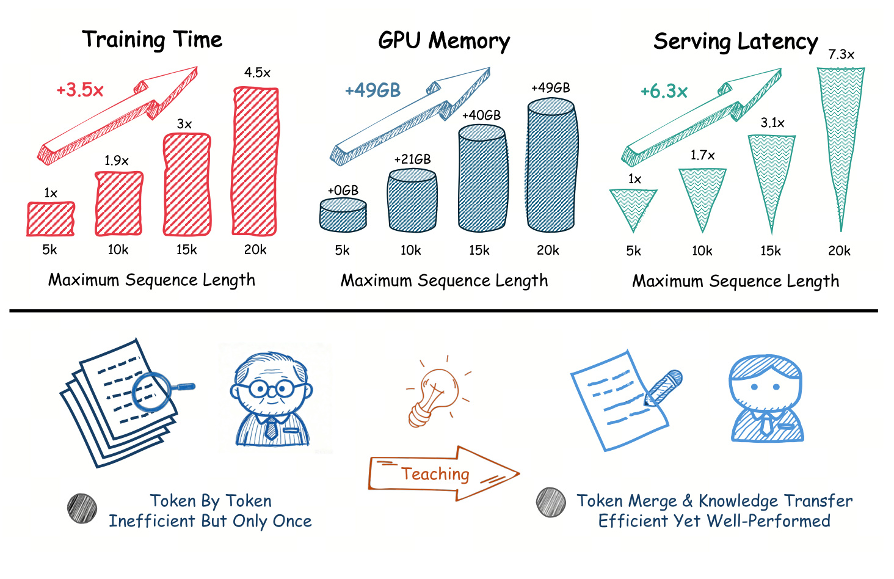
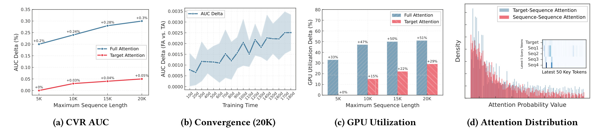
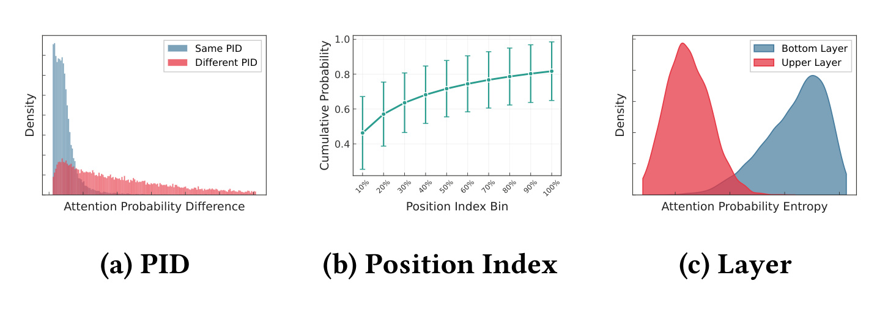
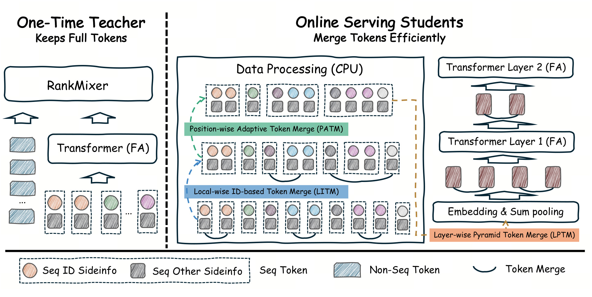
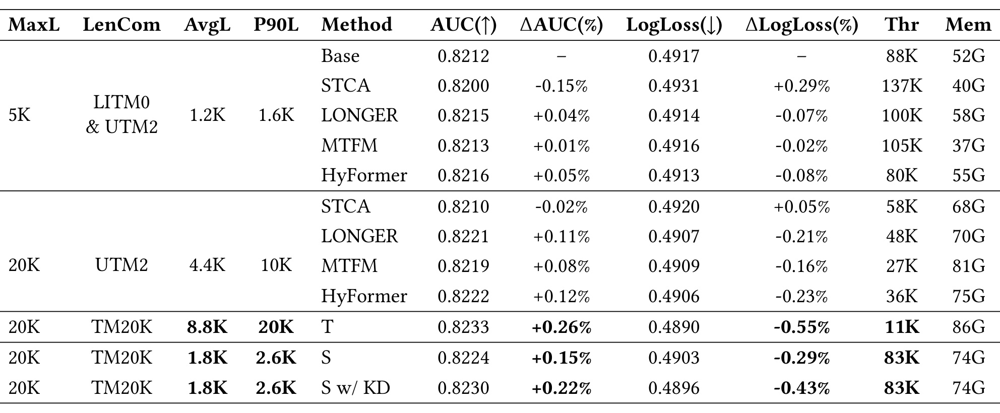
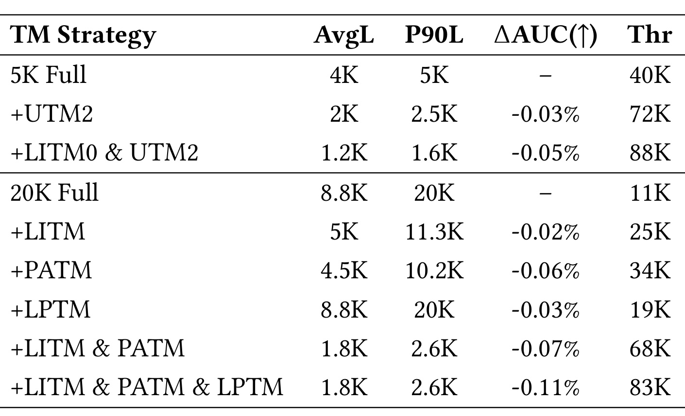
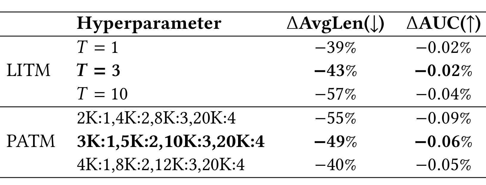
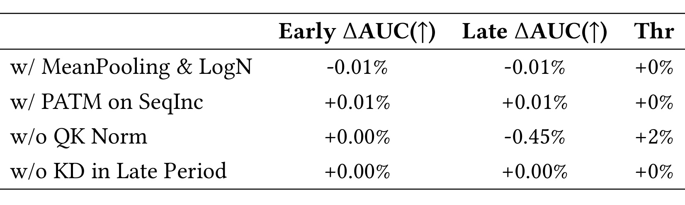
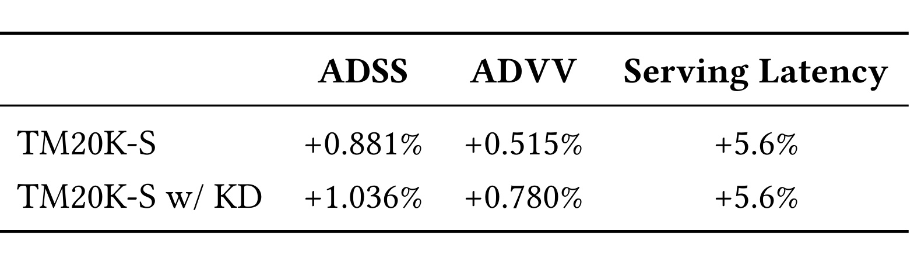

Teacher Retains Full Tokens, Student Merges Efficiently: TM20K for E-Commerce Sequence Modeling in Ad Recommendation
这篇论文研究工业广告推荐里一个很具体的矛盾：用户行为序列从 5K 延长到 20K 后，模型能看到更多长期兴趣，却很难继续按全量 token 做在线计算。论文一作 Xinchun Li 及全部作者来自 ByteDance，公开版本为 2026 年 8 月 7 日提交的 arXiv:2608.07055。本文只按当前 v1 预印本解读；PDF 的会议名、年份和 DOI 仍是 ACM 模板占位，不能据此推断录用会议。论文未在已核验来源中给出可访问的代码或项目仓库。
把用户行为序列从 5K 扩到 20K，确实能补充长期兴趣信号，但朴素 full attention 会同时把训练时间、显存和在线延迟推到不可部署的水平；已有压缩方案要么丢掉细粒度行为，要么削弱序列 token 之间的依赖建模。TM20K 要解决的不是单纯把序列做长，而是在不放弃 full attention 表达能力的前提下，把 20K 序列压回接近现网成本。
1. 背景和问题
1.1 20K 序列的收益与系统账单
在广告 CVR 预估中，目标广告是否会转化不仅与最近一次点击有关，也与用户数周甚至更久以前浏览过的商品、类目和交互类型有关。短序列容易把用户压成“最近兴趣”，长序列则可能同时保留稳定偏好和短期意图。问题在于，序列长度并不等于真实计算长度：若仍对 20K token 做多层 full attention，注意力矩阵和中间激活会随长度急剧膨胀。作者在真实系统上的先导测量显示，最大长度从 5K 增至 20K 时，即使用 FlashAttention 与 M-Falcon，训练时间仍增加 3.5 倍，GPU 显存增加 49GB，服务延迟约增加 6.3 倍。这不是稍微优化内核就能抹掉的余量，而是会直接阻断线上部署的成本跃迁。
现有折中大体有两类。第一类先检索或聚类，再只计算一小部分历史。它能把百万级原始历史压到较短的有效序列，却可能删掉单次出现但决定转化的罕见行为；聚类还依赖质量稳定的预训练 embedding。第二类把 self-attention 改成 target attention 或混合轻量结构，让候选只查询历史。这样复杂度低，但历史 token 之间不再充分交换信息，长期行为组合关系容易丢失。TM20K 的立场是：表达侧不退回纯 target attention，效率侧则把重计算转移给一次性教师，再让学生在 token 进入和穿过 transformer 时分层压缩。

Figure 1 上半部把成本曲线拆成三个维度。训练时间从 5K 的 1 倍上升到 10K 的 1.9 倍、15K 的 3 倍、20K 的 4.5 倍；相对 5K 而言，20K 增量是 3.5 倍。显存增量从 10K 的 21GB 上升到 20K 的 49GB；服务延迟从 1 倍升到 7.3 倍，即增量约 6.3 倍。下半部的教学类比不是说学生完全不读原文，而是强调计算职责分离：教师逐 token 读取完整历史，成本高但只训练一次；学生依靠 token merge 和教师知识，在训练与服务阶段使用短得多的有效序列。因而图中真正的设计变量是“重成本发生几次、是否进入在线路径”，不是简单比较大模型与小模型参数量。三条成本曲线也提醒我们，训练侧和服务侧不能只用一个 FLOPs 数字替代，二者的瓶颈与摊销方式并不相同。
1.2 Full Attention 不是默认答案
选择 full attention 需要先证明它的额外表达确实有价值。作者用相同的 6 层 transformer 骨干，在 5K、10K、15K、20K 最大长度下比较 FA 与 TA。相对 5K TA 基线，FA 的 AUC 相对增益随长度由 +0.20% 增至 +0.30%；TA 只由 0 增至 +0.05%。这说明更长历史不会自动转化为收益：若架构只能让目标 token 聚合历史，而历史 token 之间无法形成更高阶组合，新增的 15K 行为大部分没有被有效吸收。FA 的优势还随训练推进保持，支持它并非早期噪声造成的偶然差值。
代价同样清楚。Figure 2(c) 中，FA 的 GPU 利用率增量在 20K 达 +51%，TA 为 +29%；Figure 2(d) 又显示目标—序列注意力与序列—序列注意力的总体分布并没有可以直接忽略的明显差异。局部放大区域中，多个序列查询对最近 key 仍有显著响应。作者据此认为，简单删掉 seq-to-seq 交互会损失预测信息。这个证据是工业数据上的架构选择依据，但它不是对所有推荐任务的普遍定理：若上游检索已经强烈筛选历史、用户序列短或目标关联占主导，TA 的收益—成本关系可能不同。

Figure 2 的四个子图必须一起读。(a) 证明 FA 对长度扩展的收益斜率更大；(b) 显示 20K 设置下 FA 相对 TA 的 AUC 差随训练仍在增长；(c) 明确这种收益以更高 GPU 利用率为代价；(d) 则给出机制线索：目标查询和序列查询都把概率质量放在一部分关键 token 上，序列—序列通道并非全是均匀噪声。图没有提供跨随机种子误差条或显著性检验，因此不能仅凭曲线断言 FA 在任意数据集都显著更优；它足以支撑的是本文系统内“保留 FA，再从别处压成本”的路线选择。尤其是 (a) 中 TA 从 5K 到 20K 仅增加约 0.05%，说明输入长度和有效建模容量不能混为一谈；(c) 又证明这种容量并非免费。完整的工程判断必须同时保留这两条轴，而不能只截取 AUC 领先的面板。
2. 方法
2.1 从 full attention 与注意力分布得到设计约束
每个历史行为 token 由关键 ID（论文场景中主要是 product ID）和其他侧信息组成。特征分别查 embedding 后求和，整个序列再与目标广告和非序列特征交互。这个定义决定三种 merge 都必须维持 token 维度与下游接口一致，同时要允许长度变化；否则压缩模块就无法在教师与学生共享骨干、不同序列长度的条件下复用。原文用以下三式概括输入、序列编码和最终融合：
符号解释：$p_i$ 是第 $i$ 个行为的关键 ID，$o_i$ 汇总交互类型、时间等侧信息，$E_{s_i}\in\mathbb{R}^d$ 是 token 表征；$E_s\in\mathbb{R}^{L\times d}$ 堆叠长度为 $L$ 的历史，$e_t$ 是目标广告 embedding；$x_{\mathrm{seq}}$ 表示目标与历史的序列交互，最终表示 $h$ 由 RankMixer 融合非序列特征。这里的关键是 merge 发生后仍要产生与原接口兼容的 $E_s$，否则压缩会侵入下游排序结构。FA 在此基础上先把目标和历史拼在同一个上下文里，再计算带因果掩码的注意力及 SwiGLU 输出：
符号解释：$E_c$ 是目标与序列 token 的联合输入，$W_Q,W_K,W_V$ 为注意力投影，$M$ 是与 M-Falcon 服务兼容的因果掩码，$W_u,W_v,W_d$ 是前馈网络参数，$\odot$ 为逐元素乘。由于每个序列 token 既可作为 key/value，也可形成查询，FA 能表达行为之间的依赖，代价是其计算和激活随 $L$ 快速增长。作为对照，TA 只让目标广告查询历史：
符号解释：$a_t$ 是目标对历史的聚合，$o_t$ 是仅针对目标表示的前馈输出。它省掉大量序列—序列交互，因此更快，但 Figure 2 表明本文 20K 电商序列中的长度收益也随之变弱。TM20K 没有在这两者间做混合，而是明确保留 FA，再利用注意力统计决定哪些 token 可以在较小风险下合并。作者从完整 20K FA 模型的一部分训练样本抽取注意力子矩阵，得到三条对应关系。其一，相同 PID token 的注意力差异更集中，说明短时间反复操作同一商品可合并；其二，最近 10% token 贡献接近一半累计注意力，说明越新的行为越应少压；其三，下层注意力较均匀、上层更尖锐，说明可以让底层先看较长序列，再逐层加大压缩。

Figure 3(a) 比较相同与不同 PID 的注意力概率差分，相同 PID 的密度集中在更小差异区域，为 LITM 提供局部同 ID 合并依据；这不是说同商品行为完全等价，所以算法还加入最大间隔阈值。(b) 按位置分桶后，最近 10% token 已覆盖接近 0.5 的累计概率，PATM 因而对最近段使用更小合并因子，对久远段更激进。(c) 上层分布熵更低，即注意力更集中，LPTM 才在层间形成金字塔。需要注意，统计只报告第一注意力头且来自样本子集，它适合生成规则假设，仍需靠后续消融确认，而不能替代因果证明。三张子图只提供总体分布，没有展示不同用户活跃度、商品类目或转化标签下是否一致，因此规则的分群稳健性仍是空白。换言之，图能支持设计起点，不能单独证明三个规则已达到最优。
2.2 一次性全量教师与在线合并学生
TM20K 的教师和学生都采用 full attention 与 RankMixer，差别不在注意力类型，而在输入 token 是否完整。教师保留 20K 全量行为，独立训练后缓存每个样本的预测 logit；它不进入在线推理，因此作者把高吞吐需求从教师路径中移除。学生承担日常训练和服务：原始特征先在 CPU 侧经过 LITM、PATM，再查 embedding 并求和；进入 transformer 后，LPTM 在层间继续缩短序列。这样既减少 CPU—GPU 通信，也降低后续 FA 的二次复杂度。
核心贡献不是让教师和学生使用不同注意力，而是让教师用“全 token、一次性、离线”承担信息上限，让学生用“合并 token、持续训练、在线”承担成本约束，再用缓存软标签弥补规则压缩造成的信息损失。 这一分工使教师训练成本可在海量学生样本和长期服务请求上摊销。不过当数据分布变化时，缓存教师知识会变旧，是否需要重训教师与重刷 logit 是论文没有量化的运维成本。

Figure 4 左侧是完整教师：原始序列 embedding 经 FA transformer，再与非序列 token 在 RankMixer 中交互。右侧在线学生先在 CPU 数据处理阶段做 LITM 与 PATM；图中的虚线框表示若干 token 被分组，弧线表示组内求和。embedding 之后，LPTM 在 transformer 层之间继续把相邻隐藏状态成对合并。底部图例区分 PID 侧信息、其他侧信息、序列 token 与非序列 token。重要边界是：三类 merge 都没有把 token 搜索后丢弃，而是以 sum 保留到某个聚合表示中；但“没有丢 token”不等于“没有丢信息”，合并后顺序细节和罕见事件的独立表示仍不可逆地减少，这正是蒸馏要补偿的部分。
2.3 LITM、PATM 与 LPTM 的顺序压缩
LITM（Local-wise ID-based Token Merge）从头遍历序列，维护 product ID 到当前合并组的映射。如果新 token 的 PID 尚未出现，或它与该 PID 最近组的索引间隔超过阈值 $T$，就创建新组；否则把 embedding 求和到已有组。论文固定 $T=3$，只合并局部范围内同商品的连续或近邻行为。与全局按 ID 聚合相比，这个限制保留了相隔很久的重复购买或重新兴趣；与均匀相邻合并相比，它又利用了业务语义。LITM 还可在 embedding 查表前直接聚合原始 feature，减少传输，但 sum 会让交互次数隐式体现在向量幅度中。
PATM（Position-wise Adaptive Token Merge）把 20K 序列分成 $B$ 个位置段，每段使用不同压缩因子 $K_b$。论文示例将位置切成 $[1,1000]$、$[1001,5000]$、$[5001,10000]$、$[10001,20000]$，对应因子 $[1,2,3,4]$，得到约 7K token；较小索引代表更近行为，因此最新 1K 完全保留，历史越久合并越强。每段先补零到可整除，再 reshape 并沿组内求和。它把“注意力随新旧衰减”编码成确定规则，优点是 CPU 友好、延迟稳定，缺点是用户的兴趣周期未必和统一位置断点一致。
LPTM（Layer-wise Pyramid Token Merge）把压缩从输入扩展到 transformer 内部。若第 $n$ 层输出为 $\hat E_n\in\mathbb{R}^{L_n\times d}$，相邻两个历史 token 求和后形成下一层输入：
符号解释：$L_n$ 是第 $n$ 层的历史长度，$d$ 是隐藏维度，$E_{n+1}\in\mathbb{R}^{(L_n/2)\times d}$。目标广告 token 永不合并；实现也不必每层执行。论文的 6 层 transformer 每两层执行一次，使底层先在较长序列上形成局部关系，上层再处理更短、更聚焦的表示。LPTM 用 GPU tensor 运算即可实现，但求和没有学习“该保留谁”，因此会把可能语义相反的相邻事件折叠到一起。
三者按 LITM→PATM→embedding→LPTM 顺序执行：LITM 用 ID 语义去掉局部冗余，PATM 用时间位置控制输入压缩强度，LPTM 用层深度削减后续 FA 代价。顺序很重要；若先做均匀位置合并，同 PID 的精细边界已不可恢复，LITM 就失去业务语义。作者还使用 Stack Sequence，把 batch 内有效 token 重新均匀排布后再在 GPU 恢复 remove-padding 张量，完整 20K 时最多减少约 10GB 显存。这个优化不改变预测目标，但决定教师是否能在现有集群上训练。
2.4 双头知识蒸馏与服务稳定化
教师最终表示 $h^T$ 经过 MLP 得到 logit $g^T$，其 CVR 概率为 $q^T=\operatorname{Sigmoid}(g^T)$，以真实标签训练。教师与学生不是同步更新的互学习结构：教师先独立收敛，随后缓存概率供多个学生 batch 读取。因此下式定义的是教师自身的监督目标，也决定软标签的校准质量上限：
符号解释：$y\in\{0,1\}$ 是转化标签，$q^T$ 是全 20K 教师预测。原文 Eq. 10 后一句把 Sigmoid 的输入排印成 $q^T$，但紧邻定义明确先有教师 logit $g^T$；这里按上下文解释为 $\operatorname{Sigmoid}(g^T)$，不把排印错误当作额外递归运算。学生共享压缩后的表示 $h^S$，但设置主塔和蒸馏塔两个预测头，主塔只拟合真实标签：
符号解释：$q^{S,\mathrm{main}}$ 是最终服务所用概率。单独保留主塔可以避免线上输出直接依赖教师分数或蒸馏头，也让真实标签监督不被大权重软目标覆盖；与它并行的蒸馏塔同时学习真实标签和教师软概率：
符号解释：$q^{S,\mathrm{dis}}$ 是蒸馏塔概率，$\ell_{\mathrm{ce}}$ 保留硬标签校准，$\ell_{\mathrm{kd}}$ 把教师概率当二元软目标，$\lambda$ 控制两者比例。实验选择 $\lambda=50$，因为缩放后的蒸馏项与交叉熵量级接近。训练后期去掉 KD 几乎不影响最终 AUC，说明在本文训练长度内共享表示已吸收主要教师信号；这不意味着持续分布漂移时永远可以停止蒸馏。
20K、FA 与额外 KD 还使学生容易在训练后期发散。作者在 query/key 投影后做 QK Norm，限制极端 attention score；它增加少量计算，却比仅看早期指标更重要。系统同时沿用用户级训练、FlashAttention、混合精度、remove-padding 与 M-Falcon。也就是说，TM20K 的表格结果并不是三条 merge 规则在朴素 transformer 上单独产生，而是建立在一套成熟工业优化栈之上。
3. 实验结果
3.1 数据、基线与口径
离线数据来自 ByteDance 真实广告系统，覆盖连续两个月、总计数十亿样本；序列是电商历史交互，此外还有用户、商品和上下文特征。作者称已移除敏感用户/商品信息并哈希 feature ID。任务是 CVR 二分类，采用 next-batch evaluation；效果指标为 AUC 与 LogLoss，效率指标为训练吞吐 Thr 和峰值 GPU 显存 Mem，另报告最大长度 MaxL、真实计算平均长度 AvgL、90 分位长度 P90L。所有 delta 都相对长期在线的 5K 基线计算，所以 +0.22% 是 AUC 的相对变化，不是增加 0.22 个绝对百分点。
骨干为 6 层 transformer，隐藏维 512，SwiGLU 中间维 1024，全局 batch 320；20K 全量教师因显存限制把 batch 降到 96。训练使用数百 GPU 的分布式集群。对比包括 STCA、LONGER、MTFM、HyFormer；20K 对比方法统一使用 UTM2，因为原始 full 20K 代价过高。DIN、TWIN 因简单交互层显著落后而未报告数值，EST、HiSAC 因依赖高质量多模态 embedding 未纳入。这个筛选使比较更贴近作者现网约束，但也意味着基线集合并非所有长序列方法的统一复现。
3.2 离线主结果与成本
5K 在线基线 AUC 为 0.8212、LogLoss 为 0.4917、吞吐 88K、显存 52G。完整 20K 教师 TM20K-T 达到 AUC 0.8233（+0.26%）、LogLoss 0.4890（-0.55%），但吞吐只有 11K、显存 86G，说明全量历史确实有预测信号，却不具备服务可行性。未蒸馏学生把 AvgL/P90L 压到 1.8K/2.6K，AUC 仍有 +0.15%，吞吐恢复到 83K；加入 KD 后 AUC 升到 0.8230（+0.22%）、LogLoss 降到 0.4896（-0.43%），效率保持 83K/74G。
作者所说“回收约 85% 教师收益”来自 $0.22/0.26\approx84.6\%$。这是一种相对 delta 的回收率，不表示学生预测与教师逐样本一致。更有价值的系统比较是：相对 5K 基线，学生吞吐只下降约 $5.7\%$，而相对 20K 教师提高约 $7.5$ 倍；显存仍比 5K 基线多 22G，因此“成本近似不变”主要成立于服务延迟和训练吞吐语境，不能理解为全部硬件资源无增量。

Table 2 把精度和成本放在同一行，最值得比较的是三组。第一，20K 的 LONGER、MTFM、HyFormer 相对 5K 都有 +0.08% 到 +0.12% AUC，但吞吐分别只有 48K、27K、36K，说明“看更多历史”本身有收益，现有结构却难保效率。第二，TM20K-T 给出最高预测上限，却以 11K 吞吐和 86G 显存为代价。第三，S w/ KD 只比教师低 0.0003 绝对 AUC，却把吞吐恢复到 83K。表中 STCA 在 5K 和 20K 均没有体现长度收益，也支持本文系统里 seq-to-seq 交互的重要性。不过教师 batch 更小，Thr 的严格横向可比性会受 batch 和集群调度影响；论文未给出推理 QPS、P99 延迟和单位样本能耗，训练表不能代替完整的在线成本核算。
3.3 Token Merge 的组件与强度
以 20K full 为参照，单独 LITM 把 AvgL 从 8.8K 降到 5K，吞吐从 11K 升到 25K，AUC 只降 0.02%；PATM 把 AvgL 降到 4.5K、吞吐升到 34K，AUC 降 0.06%；LPTM 不改变第一层报告的 AvgL/P90L，因为它发生在层间，但吞吐升到 19K，AUC 降 0.03%。LITM+PATM 后 AvgL 已为 1.8K、吞吐 68K、AUC -0.07%；再加 LPTM，第一层长度不变，吞吐升到 83K，总损失扩大到 -0.11%。因此三种模块的主要职责不同：LITM 是低损失去冗余，PATM 是输入侧主压缩器，LPTM 是层内计算削减器。

Table 3 还提供一个容易忽略的参照：5K full 的 AvgL 实际为 4K，UTM2 将其压到 2K、吞吐由 40K 升到 72K，只损失 0.03%；加入简化 LITM0 后 AvgL 1.2K、吞吐 88K、损失 0.05%。这说明现网 5K 基线本身已是压缩模型，TM20K-S 要追平的并非未经优化的 full 5K。20K 下三模块叠加的 -0.11% AUC 是相对 full 20K 的代价，而最终相对在线 5K 基线仍有 +0.15%；KD 再把其中 0.07 个相对百分点补回来。表没有报告置信区间，细小的 -0.02% 与 -0.03% 差异应按工程量级而非严格排序理解。
强度消融进一步显示，规则压缩并非越多越好。LITM 的阈值 $T$ 从 1 提到 3 时，AvgLen 压缩由 39% 增到 43%，AUC 都是 -0.02%；提到 10 后压缩 57%，AUC 损失扩大到 -0.04%。PATM 最激进配置把 2K 以后的段快速合并，长度下降 55%，AUC -0.09%；最保守配置长度下降 40%，AUC -0.05%。线上选择中等配置，是用少量 AUC 损失换可控服务延迟，而不是离线 AUC 最大化。

Table 4 的横向轴不是同一个超参数：LITM 调整“同 PID 可以跨多远仍合并”，PATM 调整“不同时间段每几个 token 求和”。两组都呈现压缩越强、AUC 损失越大的趋势，却不能直接用 -43% 和 -49% 判断哪种模块更优，因为它们处理的冗余结构不同，而且最终顺序组合。$T=3$ 是一个局部平坦点：比 $T=1$ 多压 4%，没有额外可见 AUC 损失；PATM 则没有同样的无损平坦区。更稳健的部署方式应按用户活跃度、序列重复率和罕见转化事件做分群，而论文只报告全局平均。表中也没有序列长度分位点变化，无法判断总体压缩是否主要来自少数极长用户，还是所有用户都被近似等比例缩短。这会影响容量规划、尾延迟判断和阈值回滚策略。
3.4 蒸馏权重与训练稳定性
蒸馏权重在 30、50、75、100、150 中取值。以 $\lambda=50$ 为最佳参照，30/75/100 的 AUC 相对低 0.01%，150 低 0.03%；作者观察此时 $\lambda\ell_{kd}$ 与 $\ell_{ce}$ 量级接近。差值很小，真正强烈的消融来自稳定性：去掉 QK Norm，早期 AUC 不变，晚期却下降 0.45%，只换来 2% 吞吐提升。长序列 FA 与蒸馏共同放大极端注意力 score，若只做短训练或只看早期 checkpoint，会错误判断归一化无用。

Table 6 同时说明三个边界。将 sum pooling 改成 mean pooling 并加入 LogN，早晚 AUC 都下降 0.01%，意味着合并次数通过向量幅度携带的信息在本场景有用；仅对 5K 之后新增序列使用 PATM 可提高 0.01%，却增加工程分支；训练后期移除 KD 没有可见损失，支持蒸馏可以阶段性退出。最重要的是 w/o QK Norm 的早晚反差：它不是“提分模块”，而是防止训练轨迹在后期离开稳定区域。表只给单点 delta，没有梯度范数、发散频次和随机种子，因此机制解释仍是合理推断，而不是完整诊断。若复现只跑短 schedule，最可能漏掉的正是这项后期退化，从而误选吞吐略高却不稳定的配置。发布前应至少观察完整训练周期与多次发散率。
3.5 线上 A/B 与证据边界
在线基线是长期部署的 5K 高性能广告排序模型。TM20K-S 在服务延迟 +5.6% 时，ADSS +0.881%、ADVV +0.515%；加入 KD 后延迟不变，ADSS 提至 +1.036%、ADVV 提至 +0.780%。两行差值说明教师知识主要影响预测质量而不进入服务计算：KD 额外贡献约 +0.155% ADSS 和 +0.265% ADVV，线上执行图没有增加，所以延迟相同。

Table 7 是论文最接近落地价值的证据，但信息也最少。它报告作者称具有统计显著性的正向指标，却没有披露实验时长、样本量、流量比例、置信区间、显著性阈值、不同用户分群或绝对基线。ADSS 与 ADVV 的业务定义也未展开，外部读者无法比较经济量级。因而可以确认的是：在 ByteDance 这一电商广告链路中，TM20K-S 与蒸馏版相对成熟 5K 基线获得正向业务 delta，且服务延迟增量为 5.6%；不能据此推断其他平台也会得到同样提升，更不能把 ADSS 增益等同于收入的同幅增长。两行相同延迟还只能说明蒸馏头没有加入服务路径，不能说明教师训练、logit 存储和周期刷新没有离线成本。这些成本应在长期总拥有成本中另行核算。
4. 总结
4.1 我的判断与可迁移原则
TM20K 最有价值的地方不是发明一种更复杂的注意力，而是把长序列扩展拆成三个可单独计价的层次：教师保留信息上限，学生在输入侧按 ID 与新旧位置压缩，在层间按表示成熟度继续压缩，最后用蒸馏追回规则聚合损失。 离线表把教师上限、学生效率、蒸馏回收率放在同一口径；线上表又证明蒸馏增益不增加推理路径。这比只报告 AUC 的长序列论文更接近工业决策。
对推荐系统，最可迁移的原则是先分析注意力或贡献分布，再选择压缩维度，而不是统一 top-K：业务 ID 适合消冗余，时间位置适合分配预算，层深适合逐步缩短表示。对大模型长上下文也有类比价值：高成本教师可保留完整上下文，在线模型用结构化 token 合并和蒸馏服务；但语言 token 的组合顺序更敏感，不能直接照搬 sum merge。复现时应先建立统一的“效果—吞吐—峰值显存—P99 延迟”看板，并把 full 20K 教师视作离线上限，不把它误作可部署基线。
4.2 局限、风险与后续跟进
主要局限至少有五项：
- 单场景外推有限。 数据、特征和线上结果均来自一家公司的电商广告 CVR 链路，规则阈值与用户行为分布强绑定。
- 规则合并会隐藏罕见行为。 sum 保留总量却不可逆地损失组内顺序和事件身份；平均 AUC 可能看不到低频高价值转化的退化。
- 教师生命周期未计价。 一次性训练在静态描述中可摊销，但数据漂移、商品更新和策略变化可能要求重训教师、重刷缓存 logit。
- 线上证据披露不足。 A/B 没有时长、流量、方差、分群和指标定义，无法判断长期新鲜度、尾部用户、公平性或收益稳定性。
- 系统栈依赖较强。 结果同时依赖 FlashAttention、M-Falcon、remove-padding、Stack Sequence、混合精度和 QK Norm，单独复现三种 merge 不一定得到相同成本曲线；当前预印本的会议元数据仍未补齐。
后续值得跟进四件事：
- 复现 Table 3 的逐模块 Pareto 曲线，并按用户活跃度、序列重复率和转化价值分群，检查平均 AUC 是否掩盖罕见关键行为损失。
- 将固定的 PATM 分段与可学习门控、稀疏注意力比较，但必须同时报告 P99 延迟和自定义 GPU 算子成本，避免只优化 FLOPs。
- 设计教师刷新实验，测量分布漂移下缓存 logit 的半衰期、重蒸馏频率和端到端资源开销，验证“一次性教师”在长期运营中的真实含义。
- 等待后续版本补齐会议、代码、ADSS/ADVV 定义与更完整线上统计；在此之前，最稳妥的结论是 TM20K 给出了一个经过单一工业链路验证的长序列折中方案，而非跨域通用最优解。